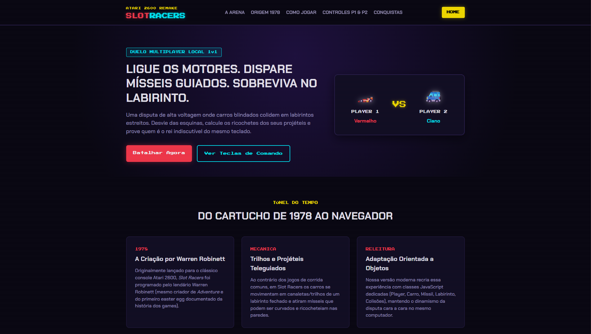
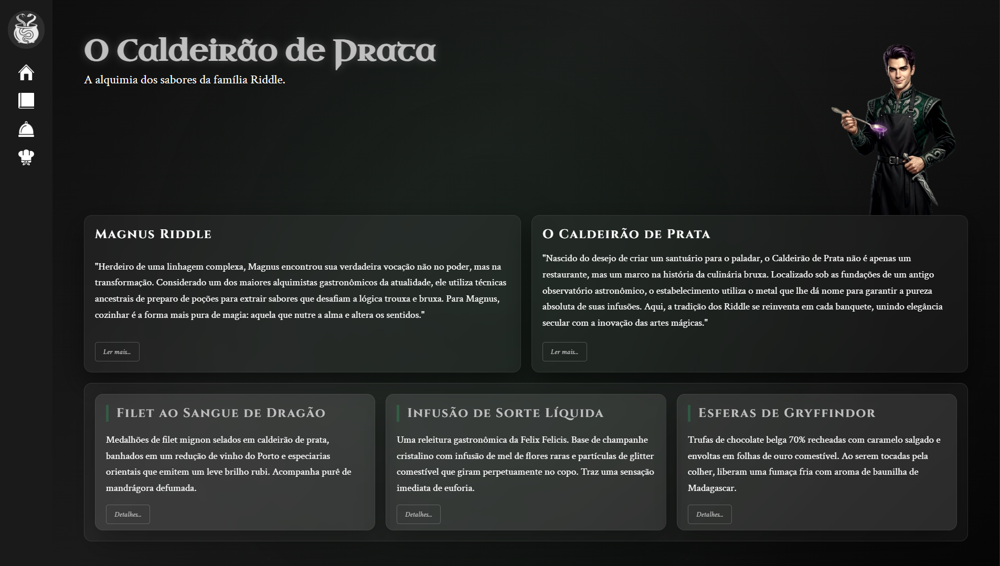
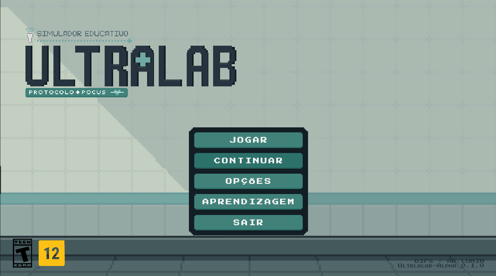
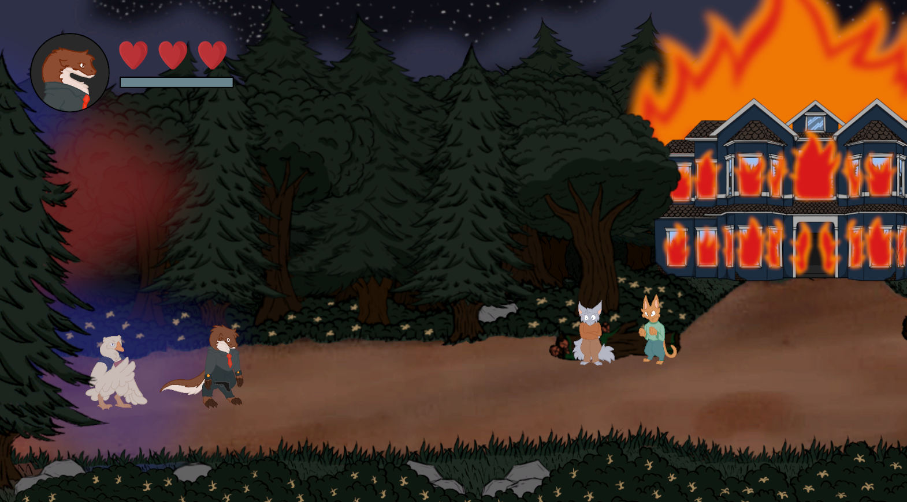
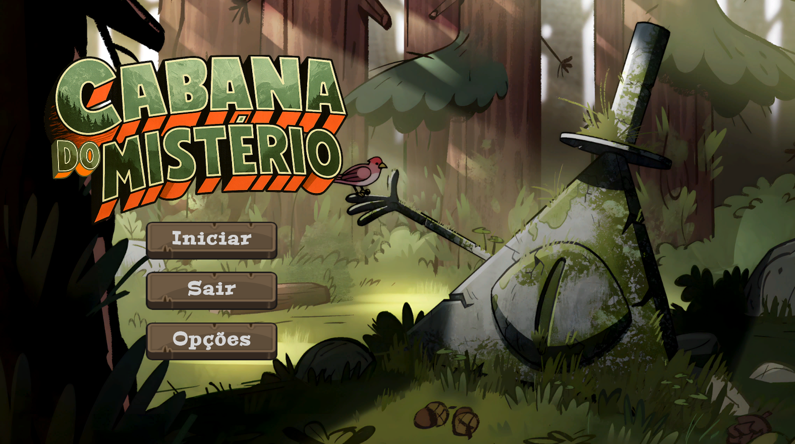

<Objetivo/>
Busco uma oportunidade de primeiro emprego em qualquer setor da empresa, com disponibilidade para trabalhar nos períodos da tarde ou noite, de forma a conciliar com meus estudos (atualmente cursando o último ano do Ensino Médio Técnico em Programação de Jogos no período da manhã). Tenho facilidade para aprender novas funções e forte interesse em crescimento profissional, especialmente na área de informática, onde já possuo boa habilidade devido ao meu curso técnico.
sys.Experiência()
Estágio Remunerado
Maio 2025 - Fev 2026@ Reitoria do IFPR
Desenvolvimento de dashboards dinâmicos e automação de planilhas. Elaboração de identidades visuais, materiais gráficos e conteúdos de divulgação para a Diretoria de Pós-Graduação.
sys.Formação()
Técnico em Programação de Jogos Digitais (3/4)
Fev 2023 – Dez 2026Instituto Federal do Paraná (IFPR) - Campus Curitiba
Curso de Design Gráfico
Maio 2024 – Jul 2024Follow Curitiba
Ensino Fundamental II
Fev 2019 – Dez 2022Colégio Estadual Lindamir Albert
import Tecnologias
// Linguagens
// Web & Frameworks
// Game Dev & Áudio
// Design & Audiovisual
class Portfólio()
Sites / Web

ATARI 2600 REMAKE SLOTRACERS
Uma disputa de alta voltagem onde carros blindados colidem em labirintos estreitos. Desvie das esquinas, calcule os ricochetes dos seus projéteis e prove quem é o rei indiscutível do mesmo teclado.
Acessar Site
O Caldeirão de Prata
Nascido do desejo de criar um santuário para o paladar, o Caldeirão de Prata não é apenas um restaurante, mas um marco na história da culinária bruxa...
Acessar SiteUnity / Jogos

Ultralab: Protocolo POCUS
Simulação educacional 2D (TCC IFPR para enfermagem).

Unknown Crime
Jogo de investigação criminal num universo de animais humanoides. Requisito de conclusão de Programação 2D do Curso de Jogos Digitais

Unknown Crime
Escapre Room Game inspirado na série animada Gravity Falls. Requisito de conclusão de Programação 3D do Curso de Jogos Digitais.